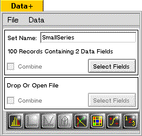
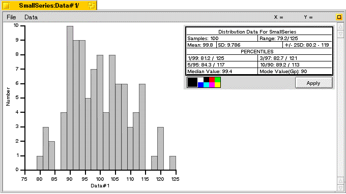
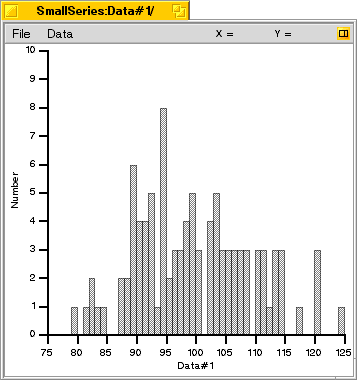
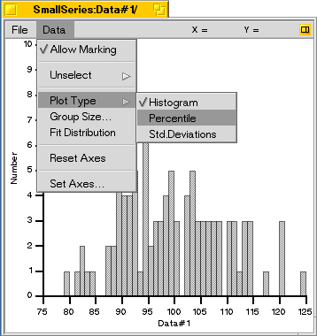
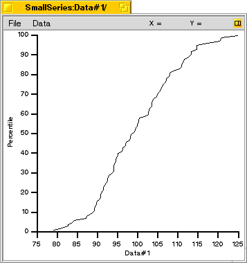
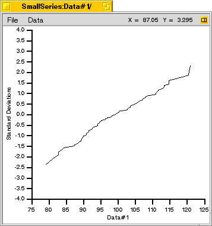
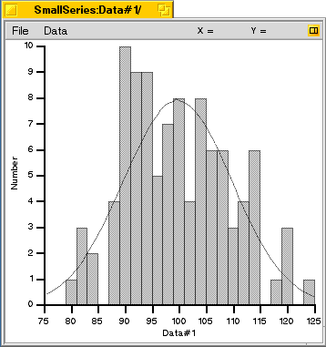
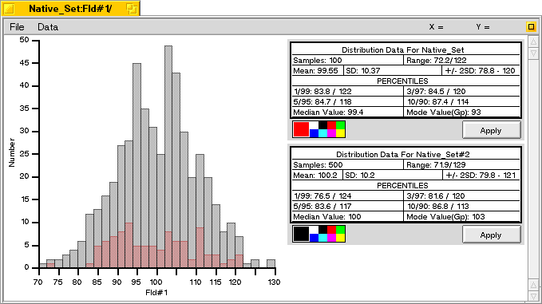

Distribution Plotting & Analysis
If you haven't already done so, quit the DataPlus Console, then go to the folder../DataPlus_Docs/Samples/ and double click on the file "SmallSeries". This is an artificial data set that was generated using a program which creates random numbers having a Gaussian distribution. The DataPlus Console should open and look like this:

Then, click on the distribution analysis tool icon at the far left side of the toolbar.
The distribution analysis window should open as follows:

The default view is a distribution histogram, which for a Gaussian (or 'Normal') distribution, should show a nice bell-shaped curve. In this case however, note how uneven the curve appears. This is because there are only 100 points plotted; as the number of points increases, the curve will begin to assume a smooth bell-like shape. However, just because the curve appears lumpy, it still has a Gaussian distribution and can be described by the statistics which appear in the box in the right side of the window.
Samples: The number of samples analyzed.
Range: The smallest and largest values in the data set.
Mean: The mean (average) of all values in the data set.
S.D.: The standard deviation of the data.
+/- 2SD: The values which are encompassed by two standard deviations above and below the mean (about 97% of the points).
1/99 (5/95, etc): The values above or below which are found 1% (5%, etc) of the data points.
Median value: The value where half the data points lie above or below (50th percentile).
Mode Value(Gp): The most common value. Note that this will depend upon how the points are grouped (Gp).
At this time, click on the small square icon in the upper right part of the menu bar to shrink the window and hide the results box.
Now, pull down the "Data" menu and select "Group Size...". In the dialog box that appears, change the group size from its current value of two to one, and press the "Apply" button.

This recalculates the histogram by grouping all the results into sets with values differing no more than 1.0. Thus, all data points between 90.0 and 91.0 were counted, and a bar was created whose height reflects the number of data points in that range. Note that the distribution is even more ragged than before, since each bar represents fewer data points.
The data can be plotted in either of three formats, a histogram, a percentile plot, or a plot representing the data values as standard deviations from the mean. To change the plot type, select the desired output from the "Data" menu as shown:

If you choose "Percentile" as shown here, the graph is redrawn as shown below:

Here, the data points have been sorted, and the value of a point is plotted against its percentile ranking in the data set. For example, this set contains 100 points, so in a low -> high sorted list of the points, point #5 would represent the 5th percentile, the 20th point would be the 20th percentile, and so on. Note that, although rough, the curve has the expected "S" shape of a Gaussian, or "Normal" distribution.
Another way of looking at the distribution is by plotting the deviation of the value from the mean (similar to a "Probit" or "Z-Score"), as shown below.

This has the advantage that, in a "Normal" distribution, the plot should be a straight line, which allows data fitting to be done.
The data fitting algorithm used in this application takes advantage of this by performing a least-squares regression of the data points +/- 2SD from the mean. This is not a very rigorous method, but it works well if the distribution is nearly Gaussian.
From the "Data" menu, choose "Fit Data", and then switch back to the histogram plot. You should now see an ideal fit for the data plotted along with the original histogram.

So far, this fitted function provides no additional data - that will be added in some upcoming update.
Data subset selection is similar to that done with the regression plotting tool and will not be repeated here. Selection of a data subset for marking occurs in the same way - by shift-clicking and dragging. The distribution analysis tool also supports multiple plots. The plot below shows two data sets plotted together, each with its own analysis. One of the sets has been plotted in red to help distinguish it. This plot used two data sets from the "Samples" folder.
